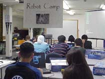
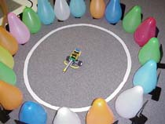

Aug 2000
-
Dr. Chung taught a robotics class for Southfield public schoolteachers as a Continuing Education course from August 18 to August 20. Schoolteachers were learning by doing many activities including seven class assignments and four official robot games. Based on the results of the games, Ms. Anita Delgado won a $25 Meijer gift certificate and Ms. Linda Moore won a $20 K-mart gift certificate.
-
Welcome on board; Dr. Ghassan M. Azar as a Senior Lecturer!
-
A Summer Robot Camp for Children of Lawrence Tech Faculty and Staff (Aug. 9 and 10) was sponsored by the MCS Department Robotics Lab.: Eleven creative LTU family kids were learning science and engineering concepts by "doing" and playing games. They completed 7 assignments on Aug. 9; Played four robot games, such as Balloon Challenge, Robo Nascar, Follow the Leader, and Board Race on Aug. 10. Please visit robot camp 2000 webpage for more info.
-
Dr. George Towfic resigns (8-8-00)
-
Prof. Ruth Favro's Summer Class in Sweden: This June (2000) I was a guest lecturer in an Artificial Life course taught by Bill Sverdlik at the University of Uppsala in Sweden. I gave some lectures on fractals and applications. Scott Ligon, an LTU graduate in Computer Science, was in the class. It was a nice way to see a part of Sweden and meet some of the people. We celebrated Midsummer's holiday with the Swedes--a day of festivities on the longest day of the year. It didn't get dark until after midnight, and started getting light at 3 am. Uppsala is a beautiful university town; I enjoyed my stay with Bill and Karen. Here are some pictures.
-
Math and math modeling competition report (99-00 school year) by Prof. Ruth Favro:
M.A.T.H. CHALLENGE (Michigan colleges) Nov. 6, 1999
4th Place out of 26 teams (Plaque received)
Scott Ligon (CS), Ken Kopp (MCS), Steve Holcomb (EE)MATHEMATICAL CONTEST IN MODELING (International contest) Feb. 6 - 9, 2000
Honorable Mention (27% of 495 teams)
Mark Wagner (MCS), Steve Holcomb (EE), Bill Kolasa (ME),
All students who participated did a very good job and enjoyed the competitions! Other students who participated: Rick Barnak (MA), Carolyn Begle, Deana Tucci, Nicole Howard, Mary Boulware (all MCS), Andrey Schvartsman (PHY/CS), Toby Hackstock, Doug Mulder (both EE).
-
Joe Engalan, an MCS graduate student working with Dr. Chung, taught a Lego Robot class for Middle school students at Michigan State University from July 31 - Aug. 4. The class was sponsored by www.klick.org. Senator Carl Levin attended the robot demo on Aug. 4.

Robot Camp 2000

Balloon Challenge

Summer Class in Sweden